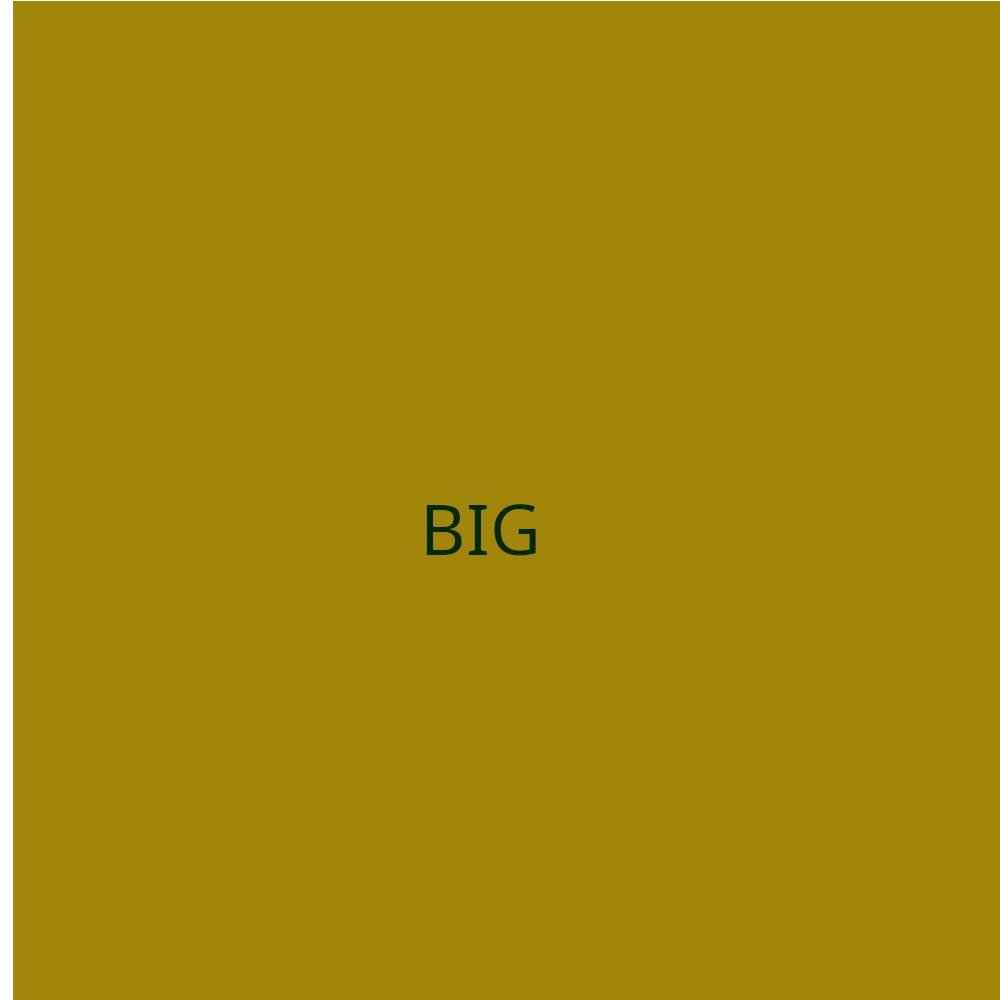

Quando quiser, permitir exibir imagens diferentes para diferentes tamanhos de tela ou dispositivos use a tag picture
A tag source media type te permite colocar tamanho maximo ou minimo para que aconteça a mudança de imagem e lembre-se de colocar o tipo de imagem no type

AUDIO
Para tocar audio voce precisa da tag audio e adicionar o parametro controls para que o controle da musica seja exibido para o usuario
Musicas HioHop
LosingMyMind-NEFFEX
TillI'monTop-NEFFEX
Outra forma de fazer isso é criar apenas a tag audio e dentro dela criar a tag source, assim ao invés de usar srcset usará type para identificar o audio para que caso não seja compativel uma estençãod e video apareceça outra
Musicas HioHop
TillI'monTop-NEFFEX
LosingMyMind-NEFFEX
Videos para o site
para adicionar um video voce usa a tag video e pode utilizar width para regular o tamanho na tela e controls para aparecer os controles do video ao usuario
Voce pode adicionar uma thumbnail ao video adicionando poster dentro da tag video e colocando o caminho da imagem
O mesmo que acontece com o audio pode ser feito com o video em caso de incompatibilidade de extenção, crie a tag video sozinha e depois adicione o source com o video e sua extenção
Videos externos
videos do youtube basta clicar em compartilhar e selecionar o grame criado e colocar aqui